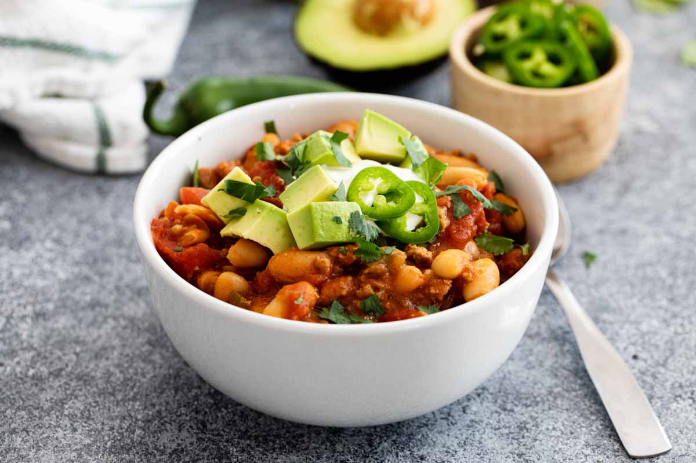

Turkey Chili

Description
Healthy turkey chili, not as good as regular chili, but its healthy and easy to make.
Ingredients
- Ground Turkey
- Jalepeno
- Red Pepper
- Pinto Beans
- Celeray
- Onion
- Garlic
- Salt
- Pepper
- Chicken Stock
- Bay Leaf
- Cumin
- Cayenne Pepper
- Canned Tomatoes
Directions
- Cook beans with onions and garlic
- Brown turkey
- Cut up veggies
- Brown veggies in same pot as turkey
- Add chicken stock, canned tomatoes, salt, pepper, and herbs
- Add in beans
- Simmer on low for 2-3 hours
- Serve
Back to Home